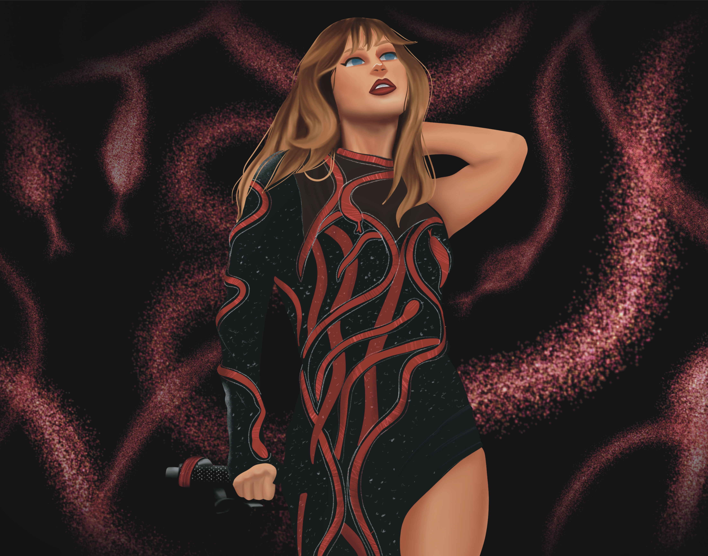

THE FALL
1989 - Reputation - Lover
1989

Esta era representó su salto definitivo al pop puro. Inspirado por los sonidos de los años 80, 1989 fue una reinvención completa. Con una estética más elegante y urbana, Taylor dejó atrás el country para abrazar sintetizadores, beats modernos y una narrativa más empoderada. Shake It Off, Blank Space y Style fueron éxitos masivos, y el álbum ganó su segundo Grammy a Álbum del Año.
REPUTATION
En Reputation, Taylor abordó la narrativa pública que se había construido en su contra, adoptando una imagen más oscura y audaz. Esta era estuvo marcada por el drama mediático, el empoderamiento y la reconstrucción personal. Musicalmente, se inclinó hacia el electro-pop y el hip hop, con una producción más agresiva. Look What You Made Me Do y Delicate destacaron en esta etapa de transición.
LOVER

Lover fue un regreso a la luz y al romanticismo después de la oscuridad de Reputation. Esta era estuvo llena de color, esperanza y expresión emocional abierta. Fue su primer álbum completamente independiente tras dejar su antigua disquera, y mostró una Taylor más segura, con temas sobre amor propio, política y madurez. Canciones como Lover y The Archer reflejan esta sensibilidad.